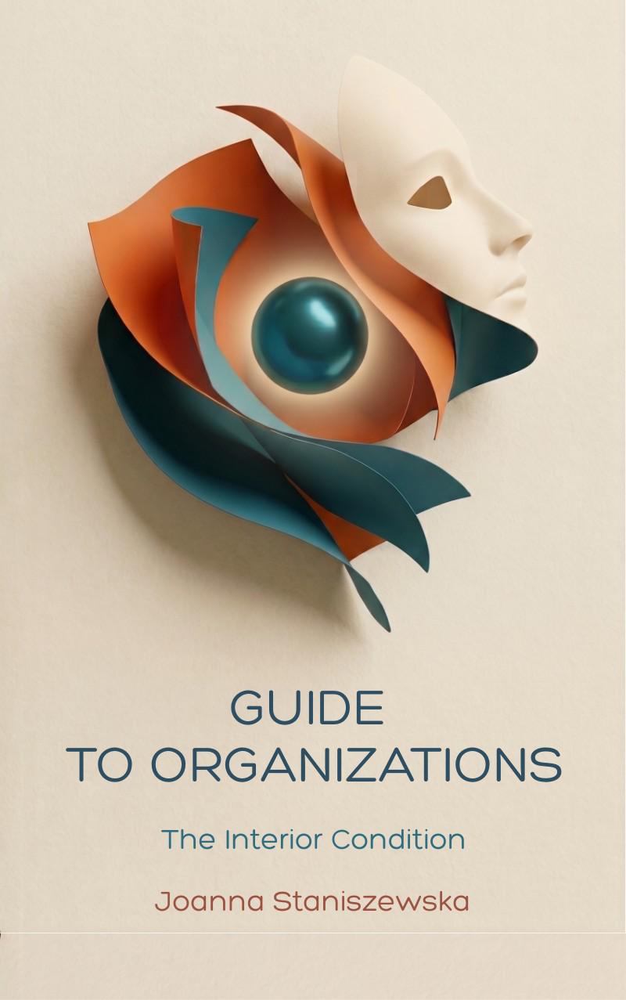

Joanna
Staniszewska
Helping organizations see clearly — from within.
And holding space for those who are thirsty for truth — their own.
Systems · Organizations
Inner Work · Retreats
EU · USA
Helping organizations see clearly — from within.
And holding space for those who are thirsty for truth — their own.
☀ the outer path the inner path ✦
☀ outer world
For twelve years I built an agency that won the #1 title in Poland at Ad World Masters — two consecutive years in a row. We operated across 20+ markets, serving Fortune 50 clients, with one project internally awarded for three years running.
For six years I taught at six universities at every level, including MBA. All of it grew through the teams we built together.
Today I work within Being in Systems as co-managing director, alongside an ongoing MBA in Creative Enterprises at Meridian University, California — and a deep immersion in emergent entrepreneurship.
✦ inner world
Soul Body Fusion. Regression. Mediumship. Visualization. Three years of Live Flow therapy. A year with 2BElemental — ending as a practitioner. Work with the psyche and collective trauma — consciousness, women's circles, transurfing, certified spiritual coaching.
A happiness course at Ahmedabad University. The Conscious Leadership Guild membership. And countless hours in the quiet.
Guess which path I'm more drawn to?
Both paths led here.
☀ the outer world — organizational work
One-on-one and small group work with leaders navigating complexity. I work in the space where organizational structure meets human awareness — slow, honest, and consequential.
Available for contract engagements across the EU and USA — organizational advisory, leadership program design, and systemic change processes rooted in Theory U and Emergent Entrepreneurship.
Six years teaching at six universities — MBA, undergraduate, and postgraduate levels. Organizational theory, leadership, and systems thinking as lived practice.
✦ the inner world — personal work
For those ready to go beneath the surface — into what is already there. Life Flow, trauma healing, visualization, somatic practices. Held in a safe and intentional space.
For people at a threshold. Certified in existential well-being counseling (KU Leuven, person-centered experiential approach) and spiritual coaching — meeting you exactly where you are.
Immersive experiences that weave body, mind, and soul. For individuals and small groups who are thirsty — not for more information, but for direct experience of themselves.
My organizational work unfolds within Being in Systems — a team of practitioners who see organizations as living organisms. Together we catalyze transformation that begins from within: slow, intentional, and genuinely human. The work is systemic, emergent, and grounded in Theory U and Emergent Entrepreneurship.
I also carry an ongoing MBA in Creative Enterprises at Meridian University, California — and a deep immersion in what it means to build what wants to exist.
☀ outer world
✦ inner world

The Interior Condition
A map for leaders who want to understand what their organizations truly are — rather than merely what they do. Thirty-three chapters on the invisible forces that shape collective life: the beliefs we inherit, the patterns we repeat, and the conditions under which real change becomes possible.
Notify me when it's out →Open to consulting engagements, facilitation, retreats, and speaking invitations — across the EU and USA.